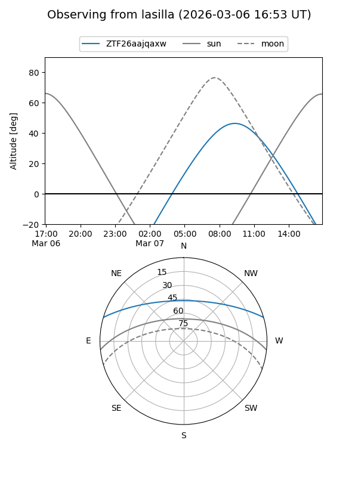
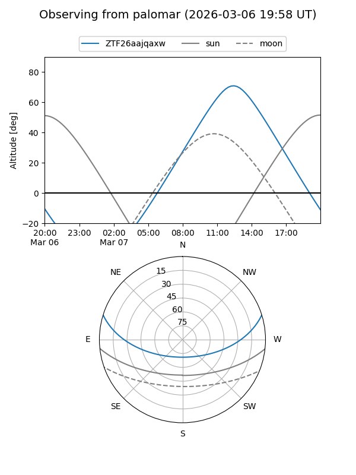

ZTF26aajqaxw
Target ZTF26aajqaxw at 2026-03-06 12:59
Aliases and brokers:
FINK: link
Lasair: link
ALeRCE: link
alt names
ZTF26aajqaxw (ztf,fink_ztf)
Coordinates:
equatorial (ra, dec) = 234.2550,+14.40655
equatorial (HMS+DMS) = 15:37:01.21,+14:24:23.57
galactic (l, b) = (23.1971,+49.47219)
Flags:
Photometry:
last ztfg=19.09
1 ztfg detections
Lightcurve
Visibility


Additional plots